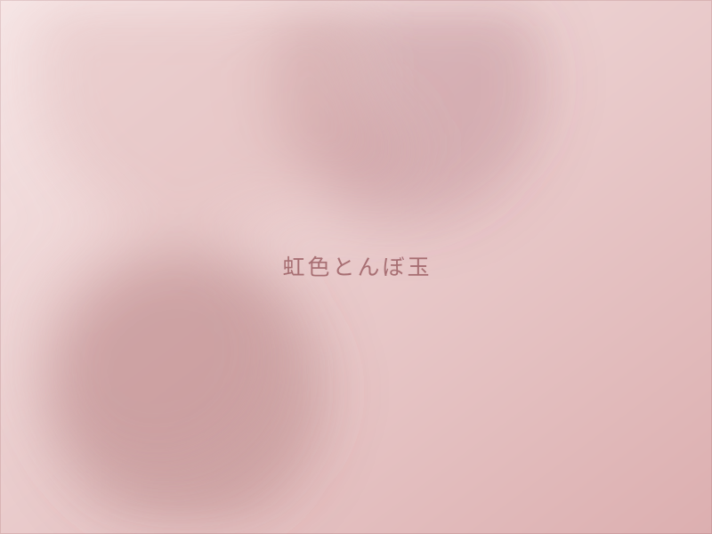
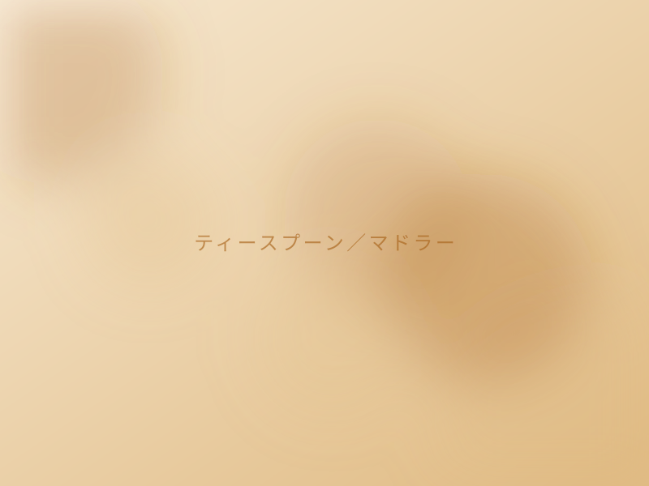
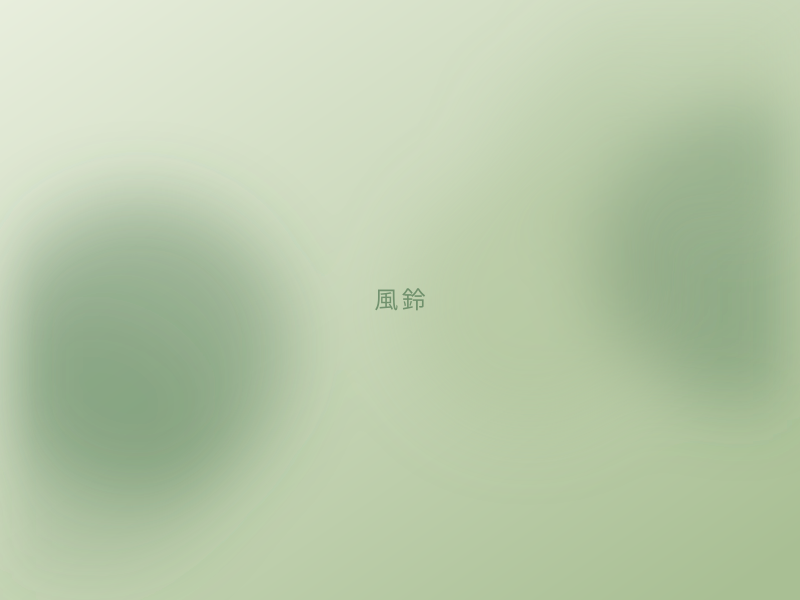
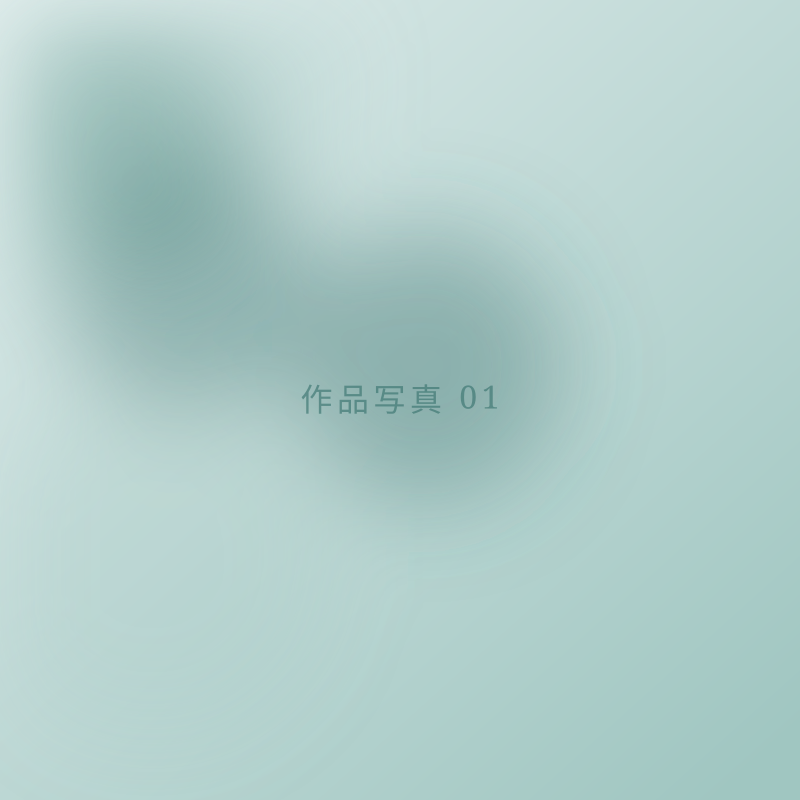
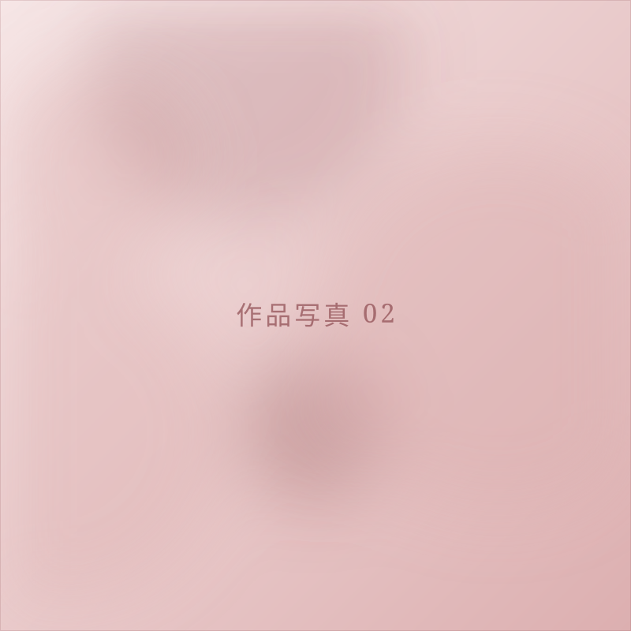
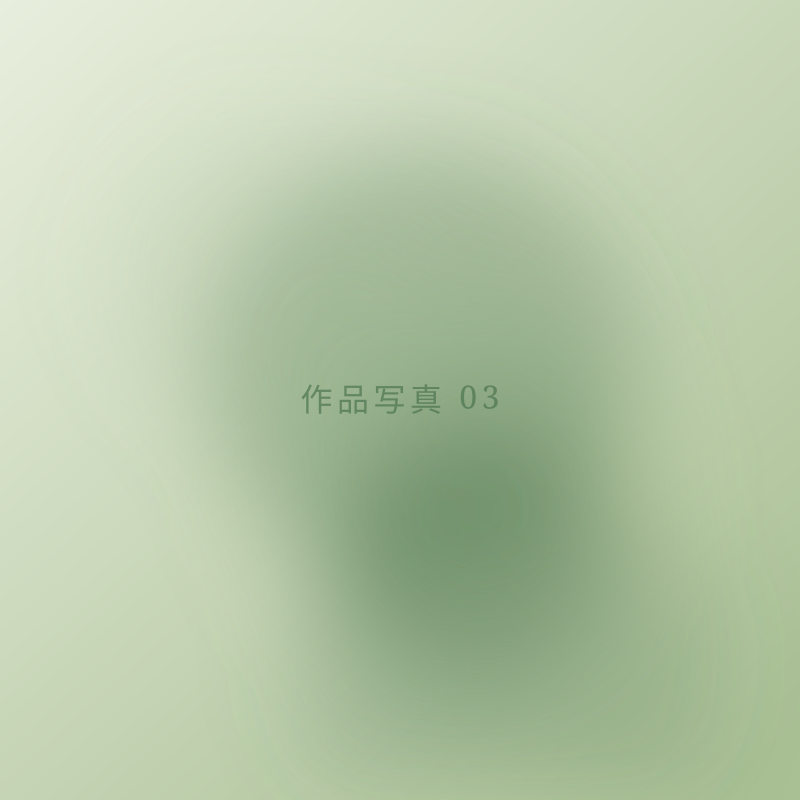
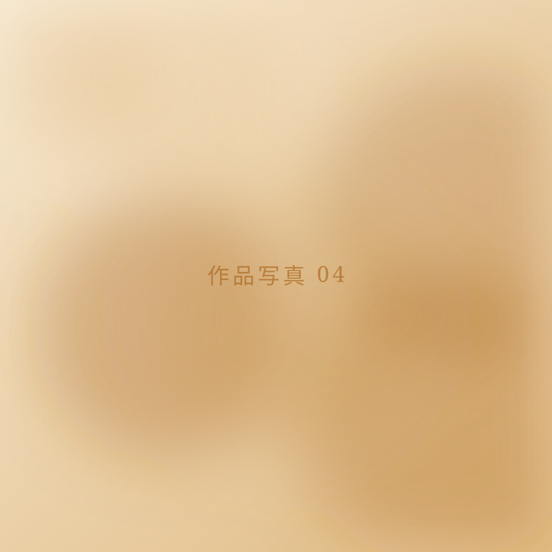
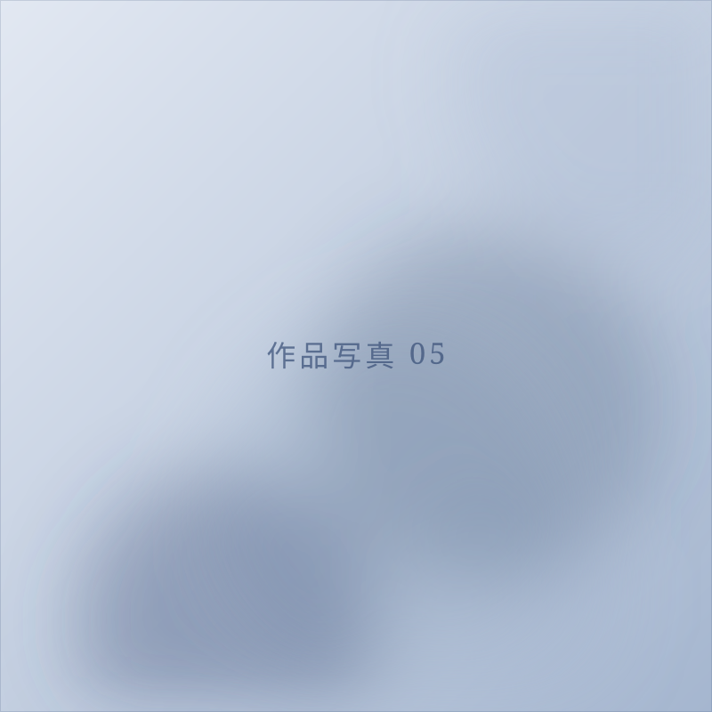
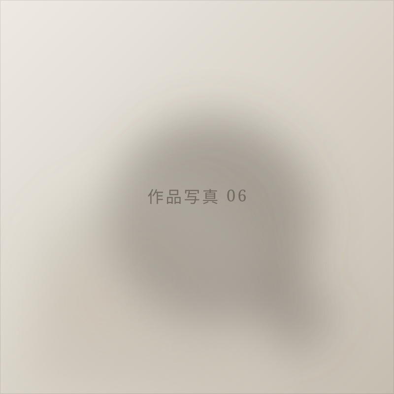
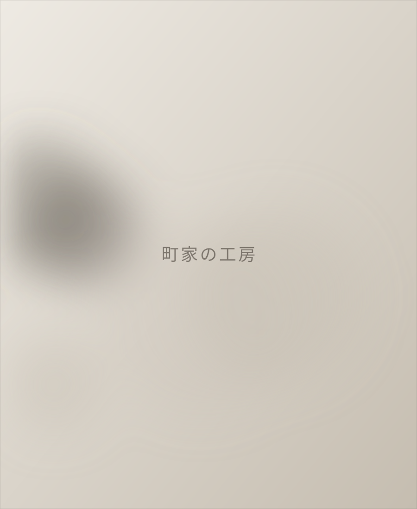

はじめての方へ
道具も材料もすべて工房のものを使います。手ぶらでお越しください。
-
火のあつかいから、お伝えします
バーナーでガラス棒を溶かす「バーナーワーク」を、工程ごとに手を添えてご案内します。火に触れるのがはじめてでも大丈夫です。
-
その日のうちに、手のひらに
つくったものは、冷ましたあとその日のうちにお渡しします。旅の途中でも、増えるのは小さな荷物ひとつだけです。
-
町家の、火のある部屋で
西陣の町家を工房にしています。少人数で火に向かう時間なので、急かされることなく、ご自分のペースで進められます。
体験メニュー
30分のプチ体験から、2時間かけてつくる風鈴まで。ご予算とお時間に合わせてお選びいただけます。
-

- 約30分
- 8歳以上
プチ体験！虹色とんぼ玉
ガラス棒を溶かして、一粒のとんぼ玉をつくります。短い時間でガラスの手ざわりを知りたい方に。
1,200円（税込）
-

- 約50分
- 8歳以上
ティースプーン／マドラー
色ガラスをねじって、毎日使える一本に。人気のメニューです。どちらをつくるかは当日お選びいただけます。
2,500円（税込）
-

- 約120分
- 13歳以上
吹きガラスの風鈴
息を吹き込んでふくらませ、絵付けまで。夏のあいだ鳴りつづける音を、自分の手でつくります。
4,500円（税込）
作品
空、海、草、生きもの。身のまわりにあるかたちを、ガラスに移しています。






実寸 約14mm
手のひらの中の、小さな景色
とんぼ玉の多くは、直径14mmほど。この画面に出ている丸が、だいたいの実寸です。近づいて覗きこむと、中に草や水や光が入っているのが見えます。作品はいつも、そのくらいの大きさのものばかりです。

工房について
2005年、京都・西陣の町家に工房を構えました。工房であり、お店であり、教室でもある小さな場所です。バーナーワークという、ガラス棒を火で溶かしてかたちにする技法で制作しています。
作品のテーマは、いつも自然のなかにあります。雨あがりの空の色、海の底の暗さ、名前を知らない草の実。ガラスは、熱いあいだだけ言うことを聞いてくれて、冷めた瞬間に、その一瞬を閉じ込めたまま動かなくなります。
アクセス
千本丸太町のバス停から徒歩3分。二条城や北野天満宮からも歩いていける、西陣のまちなかにあります。
- 住所
- 〒602-8164
京都府京都市上京区十四軒町413-45 - 営業時間
- 10:00 – 17:00
- 定休日
- 水曜・木曜・金曜
- 最寄り
- 市バス「千本丸太町」「千本出水」より徒歩3分
JR嵯峨野線・地下鉄東西線「二条」駅より徒歩15分 - 駐車場
- ありません。千本丸太町通り付近のコインパーキングをご利用ください。